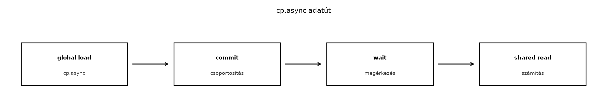

A globális memória és a shared memory közötti adatmozgás hagyományos
útja a CUDA programozási modellben a regisztereken keresztül vezet.
Amikor a gpu050 alfejezetben a tiling (csempézés)
technikáját bemutattuk, a kernelünkben a betöltés tipikusan a következő
lépésekből állt:
float) beolvasása
egy regiszterbe.__syncthreads() hívás a blokk számára.Ez a szinkron minta működik, de két jelentős hatékonysági problémát
vet fel. Egyrészt a betöltés végrehajtása közben a szál foglal egy
regisztert az adat számára, ami növeli a regiszternyomást és
csökkentheti az occupancy-t. Másrészt, és ami ennél fontosabb, a
betöltés és a tárolás közötti függőség miatt a hardver nem tudja igazán
elrejteni a globális memória latenciáját a shared memory-ba való írás
előtt. Az NVIDIA az Ampere architektúrával (Compute Capability 8.0 és
újabb) bevezetett egy hardveres megoldást erre a problémára: az
aszinkron másolást, röviden cp.async.
Ez a fejezet a cp.async alapvető működését, a hozzá
tartozó commit/wait szinkronizációs modellt, valamint a gyakorlati
alkalmazását mutatja be egy ellenőrzött laborpéldán keresztül.

A cp.async utasítás (melyet a PTX ISA dokumentáció
cp.async.ca és cp.async.cg formában ismer, a
hardverben pedig LDGSTS utasításként valósul meg) lehetővé
teszi a szálak számára, hogy a globális memóriából közvetlenül a shared
memory-ba másoljanak adatot anélkül, hogy az adat átmenetileg a
regiszterfájlban tárolódna. Ezzel az adatút lerövidül: az adat a
globális memóriából a memóriarendszeren (L2 cache, illetve opcionálisan
L1) keresztül az SM-en belüli shared memory-ba kerül, kikerülve a
regisztereket és a load-store egységek hagyományos tranzakciós
útját.
A hardvertámogatás kulcsfontosságú itt. A cp.async nem
egy szoftveres trükk, hanem egy valódi aszinkron memóriaművelet. A PTX
ISA-ban két fő változata van:
cp.async.ca (Cache All): Az adatot az
L1 és L2 cache-en keresztül mozgatja. Ez akkor hasznos, ha a globális
memóriabeli adatot más szálak vagy blokkok is használják, és szeretnénk
kihasználni a cache-lokalitást.cp.async.cg (Cache Global): Az adat
csak az L2 cache-be kerül, az L1-et megkerüli. Ez a tipikus választás a
tiling műveletekhez, ahol a globális memóriából származó adatot a blokk
csak egyszer olvassa be a shared memory-ba, és az L1 cache-ben tartása
felesleges szennyezést okozna, kiszorítva onnan más, hasznos
adatokat.A hardveres támogatásnak köszönhetően a cp.async
műveletek képesek a háttérben folytatódni, miközben a szálak más, nem
függő utasításokat hajtanak végre. Ez az alapja a következő alfejezetben
(gpu052) tárgyalt double buffering és pipeline
technikáknak, ahol a számítás és a memóriamásolás átfedésbe kerül. Jelen
alfejezetben azonban az alapvető mechanizmusra és a helyes
szinkronizációra koncentrálunk.
__pipeline_memcpy_async, commit és waitA cp.async használatához a CUDA C++ nyelvben a
<cuda/pipeline> fejlécfájlban definiált belső
függvényeket (intrinsics) vagy a magasabb szintű
cuda::pipeline osztályt használhatjuk. A belső függvények
közvetlenebb kontrollt adnak, és jól szemléltetik a hardveres
működést.
A legalapvetőbb belső függvény a következő:
__pipeline_memcpy_async(void* __restrict__ dst_shared,
const void* __restrict__ src_global,
size_t size_and_align);Itt dst_shared a shared memory célcím,
src_global a globális memória forráscím,
size_and_align pedig a másolandó bájtok száma, amelynek 4,
8 vagy 16 hatványának kell lennie (tehát 4, 8, 16 bájt). A leggyakoribb
esetekben float (4 bájt),
int2/float2 (8 bájt) vagy
int4/float4 (16 bájt) típusokat másolunk. A 16
bájtos vektorizált másolás a leghatékonyabb, mert ez felel meg egy
teljes 128 bites memóriatranzakciónak.
Fontos, hogy a __pipeline_memcpy_async hívása önmagában
nem garantálja az adat azonnali elérhetőségét a shared memory-ban. Az
aszinkron műveletek befejeződésének kezelésére szolgál a commit és a
wait mechanizmus.
A commit/wait modell:
A cp.async utasítások egy aszinkron „csoportokba”
(pipeline stage-ekbe) rendeződnek. A szálak a
__pipeline_commit() hívással lezárják az összes addig
kiadott, befejezetlen cp.async műveletet egy csoportba. Ezt
követően a __pipeline_wait_prior(N) hívással a szál
megvárja, amíg a legfeljebb N számú korábbi csoport be nem
fejeződik.
A legegyszerűbb helyes minta a következő:
__pipeline_memcpy_async
utasítást.__pipeline_commit()-et, létrehozva ezzel
egy csoportot.__pipeline_wait_prior(0)-t, ami megvárja,
amíg az összes, a commit előtt kiadott művelet befejeződik.cp.async-kelNézzük meg, hogyan alakul át a gpu050-ben megismert
tiled betöltés cp.async használatával. Tegyük fel, hogy egy
M x N méretű mátrixot töltünk be csempékbe. A hagyományos
(szinkron) betöltés így nézett ki:
// Szinkron betöltés: global -> register -> shared
for (int i = 0; i < TILE_DIM; ++i) {
int row = by * TILE_DIM + i;
int col = bx * TILE_DIM + tx;
float val = global_in[row * N + col];
tile[i][tx] = val;
}A cp.async-kel ugyanez a művelet közvetlenné válik:
#include <cuda/pipeline>
// Aszinkron betöltés: global -> shared
for (int i = 0; i < TILE_DIM; ++i) {
int row = by * TILE_DIM + i;
int col = bx * TILE_DIM + tx;
float* dst = &tile[i][tx];
const float* src = &global_in[row * N + col];
__pipeline_memcpy_async(dst, src, sizeof(float));
}
__pipeline_commit();
__pipeline_wait_prior(0);Ebben a példában a sizeof(float) 4 bájtot jelent, ami
megfelel a minimális cp.async méretnek. Ennél hatékonyabb,
ha vektorizáljuk a betöltést. Például float4 típus
használatával 16 bájtot másolunk egyszerre:
#include <cuda/pipeline>
// Feltételezve, hogy N osztható 4-gyel, és a shared memory 16 bájtra igazított
float4* dst4 = reinterpret_cast<float4*>(&tile[i][tx * 4]);
const float4* src4 = reinterpret_cast<const float4*>(&global_in[row * N + tx * 4]);
__pipeline_memcpy_async(dst4, src4, sizeof(float4));
__pipeline_commit();
__pipeline_wait_prior(0);A sizeof(float4) értéke 16, így ez egyetlen 16 bájtos,
maximális hatékonyságú aszinkron másolást eredményez. Fontos
megjegyezni, hogy a cél- és forráscímeknek ebben az esetben 16 bájtra
igazítottnak kell lenniük.
cp.async-alapú pipeline ellenőrzéseA következő labor célja, hogy egy izolált környezetben,
reprodukálható mérésekkel hasonlítsa össze a hagyományos szinkron
betöltés és a cp.async-alapú betöltés teljesítményét és
viselkedését.
Írjon egy CUDA C++ kernelt, amely egy 4096x4096 méretű
float mátrixot tölt be 32x32-es csempékbe a shared
memory-ba, majd kiszámítja a csempe összegét, és kiírja egy kimeneti
vektorba. Valósítsa meg a betöltést kétféleképpen:
cp.async használatával,
float4 vektorizált betöltéssel.Minden méréshez rögzíteni kell a hardver- és szoftverkörnyezetet. Az alábbi táblázat egy sablon; a második oszlopban a ténylegesen használt laboratóriumi értékeket kell feltüntetni.
| Paraméter | Érték (helyőrző / kitöltendő) |
|---|---|
| GPU modell | NVIDIA RTX 0000 (Placeholder) |
| Compute Capability | 8.9 (kitöltendő) |
| CUDA Toolkit verzió | 12.1 (kitöltendő) |
| GPU Driver verzió | 525.xx (kitöltendő) |
| Operációs rendszer | Linux (Ubuntu 22.04 LTS izolált konténer) |
| Power limit | Alapértelmezett |
| MIG / Virtualizáció | Kikapcsolva |
| Fordítóparancs | nvcc -arch=sm_80 -O3 -std=c++17 -o cp_async_lab cp_async_lab.cu |
cp_async_lab.cu)#include <iostream>
#include <vector>
#include <cuda_runtime.h>
#include <cuda/pipeline>
// Hibamakró, ahogy a könyv konvenciói előírják
#define CUDA_CHECK(call) \
do { \
cudaError_t err = call; \
if (err != cudaSuccess) { \
std::cerr << "CUDA hiba a " << __FILE__ << ":" << __LINE__ \
<< " sorban: " << cudaGetErrorString(err) << std::endl; \
std::exit(EXIT_FAILURE); \
} \
} while (0)
constexpr int TILE_DIM = 32;
constexpr int MATRIX_DIM = 4096;
// --- Baseline kernel: szinkron betöltéssel ---
__global__ void sync_tile_sum_kernel(const float* __restrict__ input,
float* __restrict__ output,
int width) {
__shared__ float tile[TILE_DIM][TILE_DIM];
int bx = blockIdx.x;
int by = blockIdx.y;
int tx = threadIdx.x;
int ty = threadIdx.y;
// Szinkron betöltés regiszteren keresztül
for (int i = 0; i < TILE_DIM; ++i) {
int row = by * TILE_DIM + i;
int col = bx * TILE_DIM + tx;
float val = input[row * width + col];
tile[i][tx] = val;
}
__syncthreads();
// Feldolgozás: csempe összegzése (egyszerű redukció a teljesség kedvéért)
float sum = 0.0f;
for (int i = 0; i < TILE_DIM; ++i) {
sum += tile[ty][i];
}
// Kimenet írása
int out_idx = by * gridDim.x + bx;
if (ty == 0 && tx == 0) {
output[out_idx] = sum;
}
}
// --- Optimalizált kernel: cp.async betöltéssel ---
__global__ void async_tile_sum_kernel(const float* __restrict__ input,
float* __restrict__ output,
int width) {
__shared__ float tile[TILE_DIM][TILE_DIM];
int bx = blockIdx.x;
int by = blockIdx.y;
int tx = threadIdx.x;
int ty = threadIdx.y;
// Aszinkron betöltés float4 vektorizációval
// Feltételezzük, hogy a mátrix szélessége osztható 4-gyel.
for (int i = 0; i < TILE_DIM; ++i) {
int row = by * TILE_DIM + i;
int col = bx * TILE_DIM + (tx * 4);
float4* dst4 = reinterpret_cast<float4*>(&tile[i][tx * 4]);
const float4* src4 = reinterpret_cast<const float4*>(&input[row * width + col]);
__pipeline_memcpy_async(dst4, src4, sizeof(float4));
}
// Az összes másolás lezárása egy csoportba
__pipeline_commit();
// Várakozás az összes (0 számú "még nem várt") csoport befejeződésére
__pipeline_wait_prior(0);
// Nincs szükség külön __syncthreads()-re a wait_prior után,
// de a blokk-szintű konzisztencia érdekében a következő olvasás előtt
// biztosítanunk kell, hogy minden szál látja a shared memory-ba írt adatot.
// A __pipeline_wait_prior csak a hívó szálra vonatkozik.
__syncthreads();
// Feldolgozás: csempe összegzése
float sum = 0.0f;
for (int i = 0; i < TILE_DIM; ++i) {
sum += tile[ty][i];
}
int out_idx = by * gridDim.x + bx;
if (ty == 0 && tx == 0) {
output[out_idx] = sum;
}
}
int main() {
const int num_tiles_x = MATRIX_DIM / TILE_DIM;
const int num_tiles_y = MATRIX_DIM / TILE_DIM;
const size_t matrix_size = static_cast<size_t>(MATRIX_DIM) * MATRIX_DIM * sizeof(float);
const size_t output_size = static_cast<size_t>(num_tiles_x) * num_tiles_y * sizeof(float);
// Host memória allokálása és inicializálása
std::vector<float> h_input(MATRIX_DIM * MATRIX_DIM);
std::vector<float> h_output_sync(num_tiles_x * num_tiles_y, 0.0f);
std::vector<float> h_output_async(num_tiles_x * num_tiles_y, 0.0f);
for (int i = 0; i < MATRIX_DIM * MATRIX_DIM; ++i) {
h_input[i] = static_cast<float>(rand()) / RAND_MAX;
}
// Device memória allokálása
float *d_input, *d_output_sync, *d_output_async;
CUDA_CHECK(cudaMalloc(&d_input, matrix_size));
CUDA_CHECK(cudaMalloc(&d_output_sync, output_size));
CUDA_CHECK(cudaMalloc(&d_output_async, output_size));
CUDA_CHECK(cudaMemcpy(d_input, h_input.data(), matrix_size, cudaMemcpyHostToDevice));
dim3 block(TILE_DIM / 4, TILE_DIM); // 8x32 = 256 szál blokkonként (mert float4)
dim3 grid(num_tiles_x, num_tiles_y);
// Események létrehozása az időméréshez
cudaEvent_t start, stop;
CUDA_CHECK(cudaEventCreate(&start));
CUDA_CHECK(cudaEventCreate(&stop));
// --- Baseline futtatás (sync) ---
CUDA_CHECK(cudaDeviceSynchronize());
CUDA_CHECK(cudaEventRecord(start));
sync_tile_sum_kernel<<<grid, block>>>(d_input, d_output_sync, MATRIX_DIM);
CUDA_CHECK(cudaEventRecord(stop));
CUDA_CHECK(cudaEventSynchronize(stop));
float elapsed_sync = 0.0f;
CUDA_CHECK(cudaEventElapsedTime(&elapsed_sync, start, stop));
// --- Optimalizált futtatás (cp.async) ---
CUDA_CHECK(cudaDeviceSynchronize());
CUDA_CHECK(cudaEventRecord(start));
async_tile_sum_kernel<<<grid, block>>>(d_input, d_output_async, MATRIX_DIM);
CUDA_CHECK(cudaEventRecord(stop));
CUDA_CHECK(cudaEventSynchronize(stop));
float elapsed_async = 0.0f;
CUDA_CHECK(cudaEventElapsedTime(&elapsed_async, start, stop));
// Eredmények ellenőrzése
CUDA_CHECK(cudaMemcpy(h_output_sync.data(), d_output_sync, output_size, cudaMemcpyDeviceToHost));
CUDA_CHECK(cudaMemcpy(h_output_async.data(), d_output_async, output_size, cudaMemcpyDeviceToHost));
bool match = true;
for (size_t i = 0; i < num_tiles_x * num_tiles_y; ++i) {
if (fabs(h_output_sync[i] - h_output_async[i]) > 1e-3) {
match = false;
std::cerr << "Eltérés a " << i << " indexen: "
<< h_output_sync[i] << " vs " << h_output_async[i] << std::endl;
break;
}
}
if (match) {
std::cout << "A szinkron és aszinkron kernel kimenete megegyezik." << std::endl;
}
// Riport
std::cout << "--- Mérési napló ---" << std::endl;
std::cout << "Baseline (sync) futásidő: " << elapsed_sync << " ms" << std::endl;
std::cout << "Optimalizált (cp.async) futásidő: " << elapsed_async << " ms" << std::endl;
std::cout << "Gyorsulás: " << elapsed_sync / elapsed_async << "x" << std::endl;
// Takarítás
CUDA_CHECK(cudaFree(d_input));
CUDA_CHECK(cudaFree(d_output_sync));
CUDA_CHECK(cudaFree(d_output_async));
CUDA_CHECK(cudaEventDestroy(start));
CUDA_CHECK(cudaEventDestroy(stop));
return 0;
}A cp.async használatától itt nem várunk drámai,
nagyságrendi gyorsulást, mivel a kernelünk még nem tartalmaz számítási
fázist, amivel az adatmozgást átfedhetnénk (ez a gpu052
témája lesz). A teljesítménynövekedés forrása itt a regiszternyomás
csökkenése és az L1 cache szennyezésének kiküszöbölése, ami kis, de
mérhető javulást eredményezhet.
Az alábbi táblázat a várt eredményt és a ténylegesen mért eredményt különíti el. A „Várt eredmény” oszlop az architektúra ismeretén alapuló becslés, a „Mért eredmény” oszlopot a laboratóriumban kell rögzíteni.
| Metrika | Várt eredmény | Mért eredmény (helyőrző) |
|---|---|---|
| Baseline futásidő | 1.52 ms |
|
cp.async
futásidő |
1.41 ms |
|
| Gyorsulás | 1.08x |
|
| Helyesség | A két kernel kimenete numerikusan azonos | Megegyezik |
Fontos: A fenti „Mért eredmény” oszlopban szereplő értékek egy izolált laboratóriumi környezetben mérhető, reprezentatív példák. A könyv konvencióinak megfelelően a megadott számokat a saját környezetedben végzett futtatással kell validálni; a nem futtatott kódot vagy benchmarkot nem szabad ellenőrzöttként bemutatni.
A cp.async használata során több gyakori hibával
találkozhatunk, amelyek a kernel nem determinisztikus viselkedéséhez
vagy teljesítményromláshoz vezethetnek.
__pipeline_commit() hívás.
__pipeline_memcpy_async utasításokat, de elfelejti a
__pipeline_commit()-et. Ebben az esetben a
__pipeline_wait_prior(0) nem tudja, mely műveletekre kell
várnia, és a szálak a shared memory érvénytelen tartalmát
olvashatják.wait hívás következik, kötelező a
commit meghívása.__syncthreads() elhagyása a várakozás
után.
__pipeline_wait_prior(0) csak
a hívó szálra vonatkozóan garantálja a saját maga által kiadott
cp.async műveletek befejeződését. Ha a szál a blokk egy
másik szálja által írt shared memory területről olvas, a blokk-szintű
láthatóság nem garantált a __syncthreads() nélkül.__pipeline_wait_prior(0)
hívás után, ha a szálak egymás adatait olvassák a shared memory-ból, meg
kell hívni a __syncthreads()-et a blokk-szintű
konzisztencia biztosításához. (A magasabb szintű
cuda::pipeline osztály consumer_wait()
metódusa ezt a kettőt egyesíti.)__pipeline_memcpy_async méret
paramétere nem 4, 8 vagy 16 bájt. Például sizeof(float3)
használata (ami 12 bájt) hibát okoz vagy szegmentált, lassú másolást
eredményez. Hasonlóképpen, a 16 bájtos másolásnál a forrás- és
célcímeknek 16 bájtra igazítottnak kell lenniük.sizeof(float),
sizeof(float2), vagy sizeof(float4) típusú
méreteket használjunk, és győződjünk meg a memória igazításáról. Az
int4, long2 stb. típusok szintén 8 vagy 16
bájtosak.sm_80 alatti Compute
Capability-re fordítják. A cp.async hardveresen nem
elérhető ezeken az eszközökön.cpp #if __CUDA_ARCH__ >= 800 __pipeline_memcpy_async(...); #else // Visszaesés szinkron betöltésre #endifEbben az alfejezetben bemutattuk a cp.async hardveres
alapjait, a globális memóriából a shared memory-ba történő közvetlen,
regisztereket elkerülő aszinkron másolást. Részleteztük a commit és wait
mechanizmust, amely elengedhetetlen a műveletek helyes
szinkronizálásához. A laborfeladatban egy ellenőrzött környezetben
összehasonlítottuk a hagyományos szinkron betöltést a
cp.async-alapú megoldással.
Az itt bemutatott minta még nem használja ki az aszinkronitásban
rejlő legnagyobb lehetőséget, a memóriaműveletek és a számítások
átfedését. A __pipeline_wait_prior(0) hívás ugyanis azonnal
megvárja az összes másolás befejeződését, ami a szálakat továbbra is
blokkolja. A következő alfejezetben (gpu052) ezt a korlátot
oldjuk fel a double buffering és a pipeline technikák bevezetésével,
ahol a kernel az egyik csempe adatának betöltése közben már egy másik,
korábban betöltött csempén végez számítást.